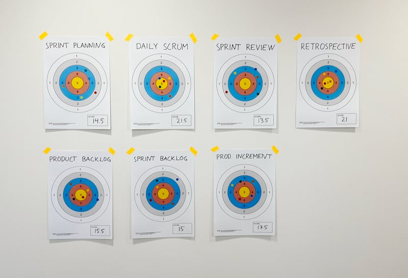

Before starting this latest incarnation of my blog, I was blogging in a couple of different places. Judging from the traffic, some of those posts still seem valuable to people so I’ve decided to move them here. That way, they won’t disappear when I shut down my older sites.
Rather than rewriting them as I would have using my most current lens, I’ve decided to just post them as-is. So, withour further ado, here are some older posts of mine...
Read more

November will bring a big change for me.
When I finish my current position, I will be taking my agile coaching and facilitation freelance.
I’m a bit nervous but also absolutely thrilled about this opportunity to use my 12 years of agile experience to help as many teams as I can.
Read more
... and get your printable “shooting target” here

Regardless of whether you use a print-out (for example using my template below :) or draw one on a whiteboard, a shooting target can be a simple but versatile tool for scoring pretty much anything in your retrospectives.
Read more

The more, the merrier, right? Well, not in Scrum.
Every time I’ve been working with a team bigger than the 3-9 people guideline, I’ve experienced how incredibly hard it can be to make Scrum work well in these conditions. And problems can start showing even with teams towards the higher end of what’s “allowed”!
In this post, I will share the top 5 reasons I’ve seen why smaller is better.
Read more

The sprint weather report is one of my favourites when it comes to agile check-in exercises for retrospectives. I used to run this exercise by printing each symbol on A4, put them up on the board and let people dot vote, but it always felt a bit wasteful to throw away the marked print outs at the end of each retrospective. I have therefore created some cards to use and reuse instead.
In case they are useful to anyone else, I’m posting them here on the blog as a free download.
Read more

A quick check-in exercise is a great way to start a retrospective. Not only does it help the group get warmed up and quickly get a feeling for how everyone feels the sprint went. It’s also a really useful tool for you as the facilitator, as a way to assess what’s going on. Is whatever plan you have for the rest of the retrospective the right one or do you need to do something different?
As a facilitator, it’s a good idea to have several different check-ins to choose from, so that you can keep your retrospectives varied and interesting. I will share my favourites in this article.
Read more
I used to blog quite a bit about Scrum and Agile a couple of years ago. My old blog is still there, in all its glory. But then I stopped. It wasn’t so much a conscious decision. Instead, it was just that the gap between posts grew. A week became a month, became a year, became two.
Recently, I have started to miss it, though. I enjoy writing and as someone who also enjoys reading about others’ experiences, it only seems right that I make the effort to share mine.
That’s why I’m starting blogging again today.
Read more